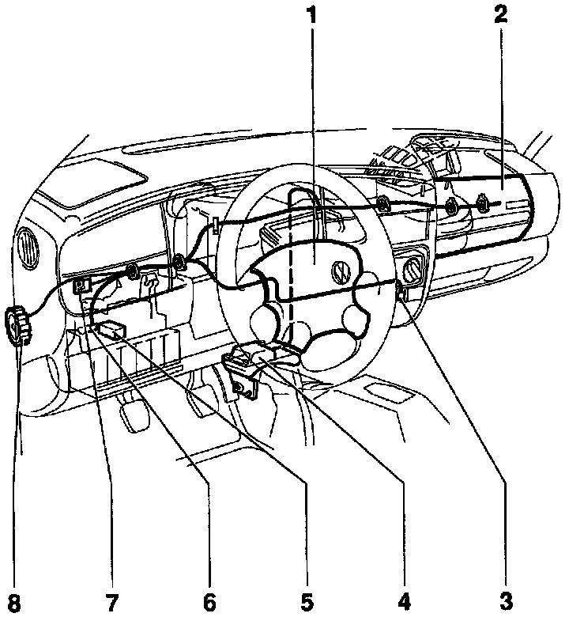

Front Airbag Components

1 - Driver's side airbag unit
2 - Passenger's side airbag unit
3 - Data Link Connector (DLC)
4 - Airbag Control Module (J234)
5 - Horn Relay
6 - Junction box (terminal 15/TV4)
7 - Airbag Malfunction Indicator Lamp (MIL) (K75)
8 - Central Ground (GND) terminal